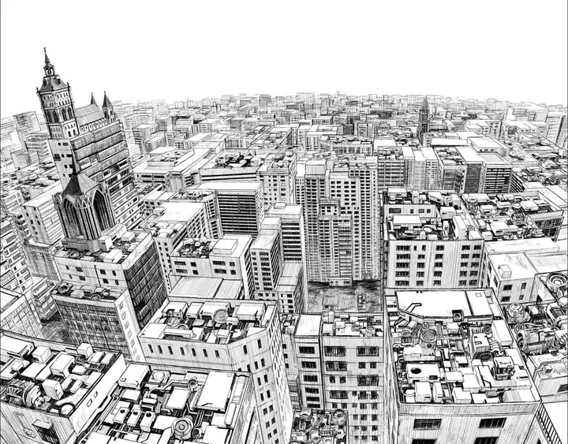
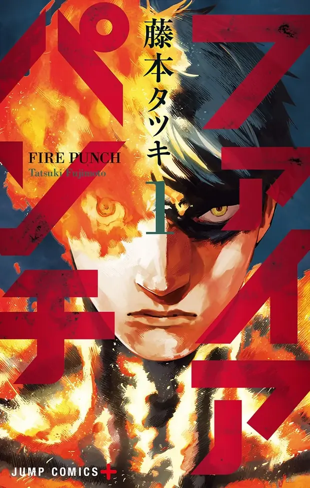

01 / Dunia
Tatsuki Fujimoto · Shōnen Jump+ · 2016–2018
FIRE PUNCH
Dunia tertutup salju abadi. Di tengahnya, satu manusia terbakar dan tak pernah mati.
Gulir ↓ masuk ke badaiBumi membeku dan tandus. Sosok yang disebut Penyihir Es dikaitkan dengan musim dingin abadi ini. Salju turun tanpa henti, makanan langka, dan manusia bertahan dengan cara apa pun.
祝福者
Sebagian kecil manusia lahir dengan kekuatan luar biasa yang disebut Berkah (Blessing). Mereka disebut para Blessed.

Fire Punch bukan cerita pahlawan biasa. Ini kisah balas dendam yang terus berbelok ke arah yang tidak kamu duga.

02 / Protagonis
AGNIアグニ
Agni punya Berkah regenerasi: luka apa pun sembuh dengan sendirinya. Suatu hari desanya dihancurkan oleh api yang tidak bisa dipadamkan.
Api itu melekat di tubuhnya. Ia terbakar setiap detik, tapi regenerasinya tidak membiarkannya mati. Dengan tubuh yang terus menyala, ia bersumpah membalas dendam.
生きて “Hiduplah.” Kata terakhir Luna, adiknya.
- BerkahRegenerasi
- StatusTerbakar selamanya
- TujuanBalas dendam
03 / Karakter
Wajah-wajah di tengah badai
Bebas spoiler. Arahkan atau ketuk panel untuk menyalakannya.
Wajah lainnya
04 / Arc
Lima babak, 83 bab
Teaser-nya bebas spoiler. Ringkasan lengkap membeku di bawah es: klik untuk melelehkannya. Nama arc berasal dari komunitas penggemar, bukan judul resmi.
Peta bab
05 / Arsip
Fakta yang tersisa
0Bab
0Volume
0Mulai terbit
0Tamat
Rak volume · tanggal terbit Jepang
06 / Mulai baca
Siap masuk ke badai?
Dukung karya aslinya lewat sumber resmi.